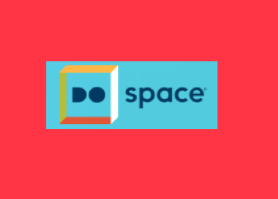

At Do Space, we believe in empowering the community through access to technology and innovative learning experiences. Free and open to all, Do Space is a community technology library, a digital workshop, and an innovation playground filled with opportunities to learn, grow, explore and create.